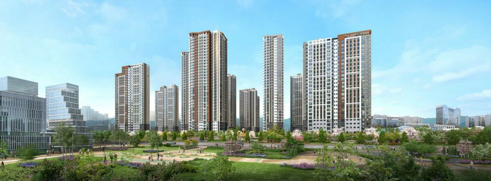
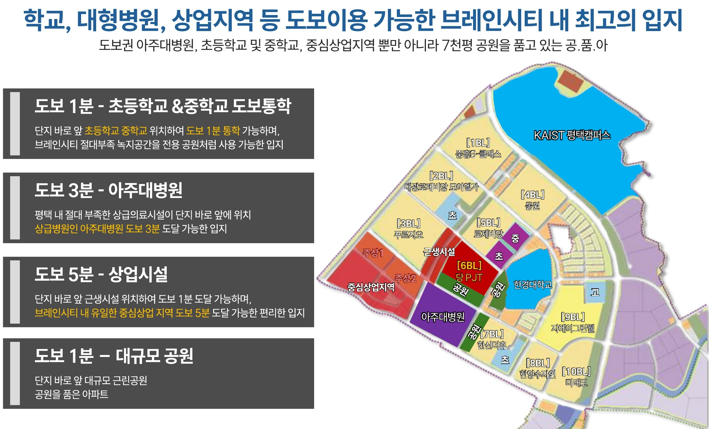
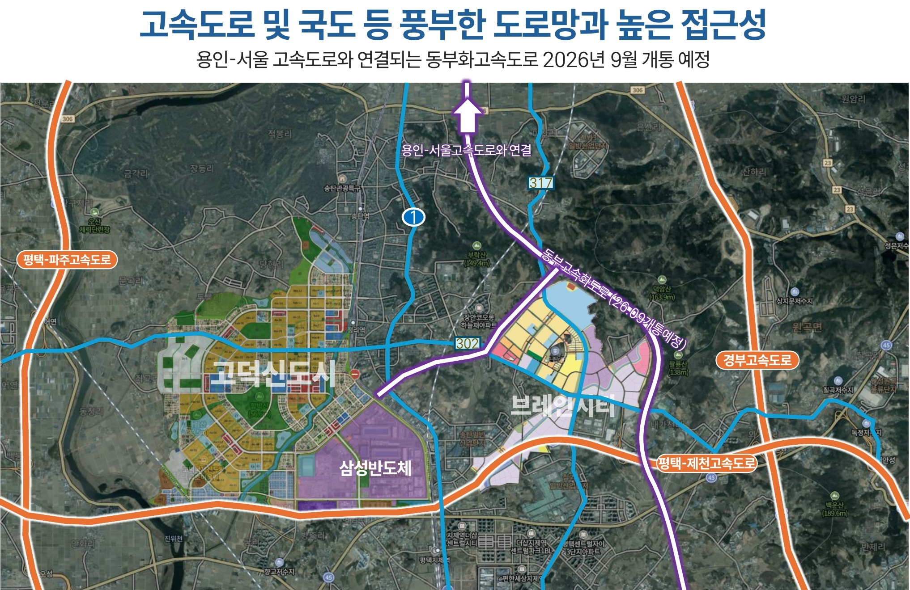
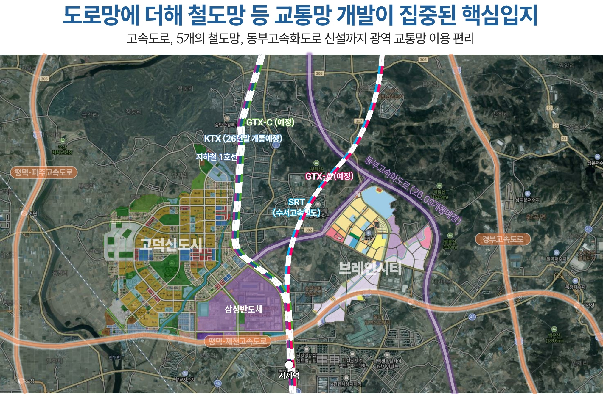
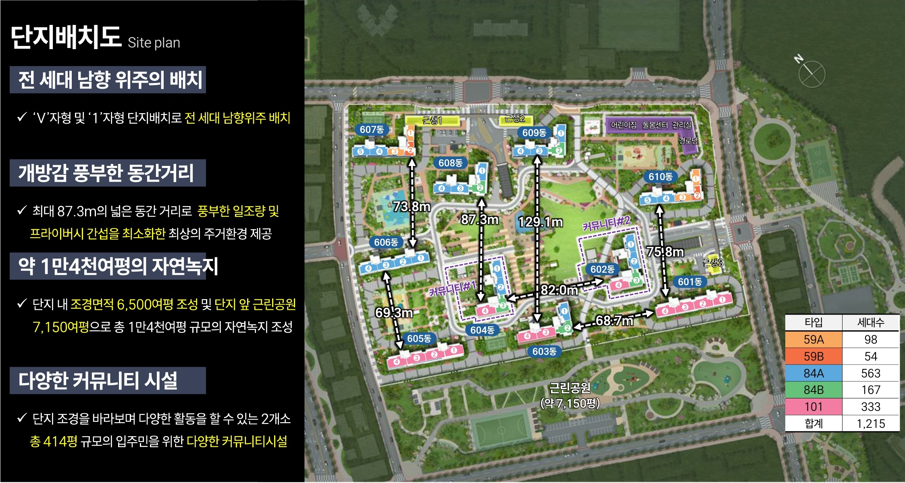
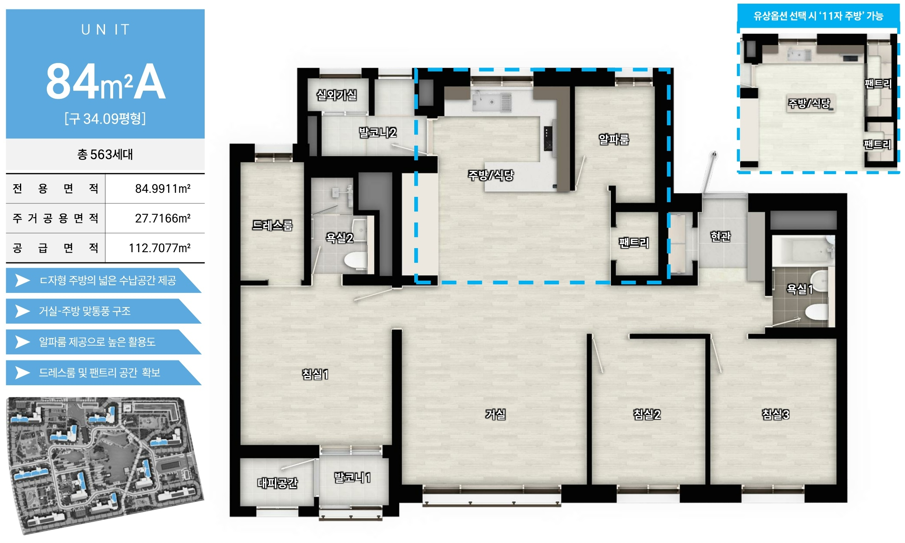
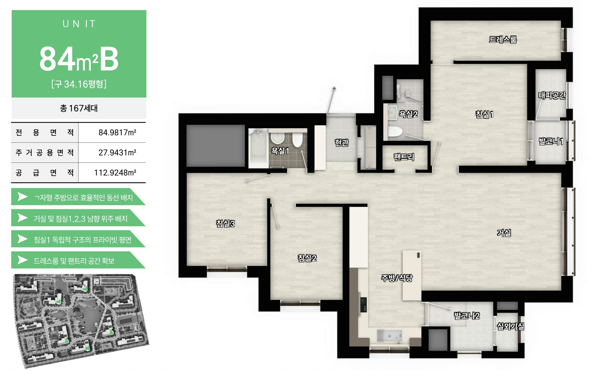
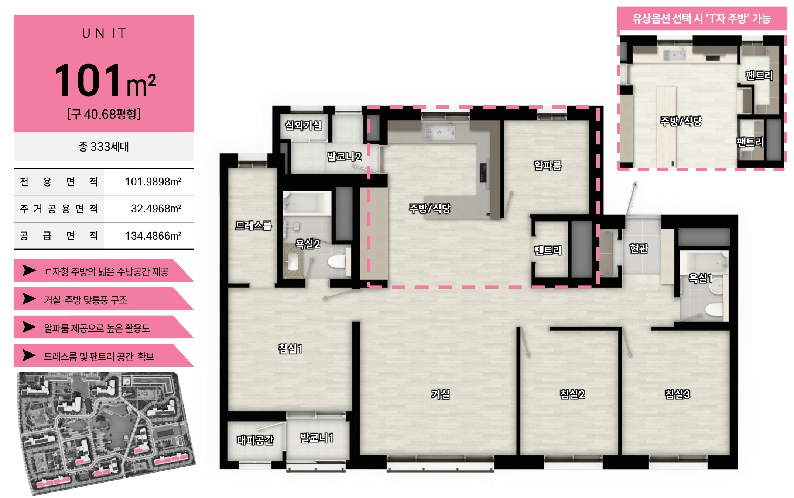
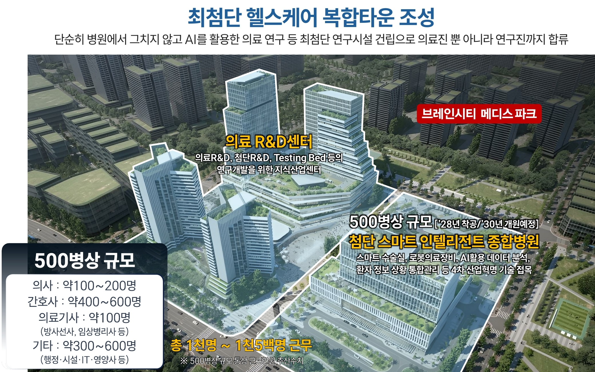

PYEONGTAEK · BRAIN CITY 6BL
브레인시티 메디스파크
로제비앙 모아엘가
사업 정보와 타입별 평면을 자료의 기준일과 함께 살펴보세요.
1,215세대
10개 동
35최고 층
자료: 메디스파크_홍보자료.pdf p.2 · 2025.09 기준 내부 교육자료
투시 이미지는 제공된 실습 자료. 실제 시공 및 조경 상태와 다를 수 있음.
PROJECT OVERVIEW
사업 정보를 먼저 확인합니다
아래 내용은 PDF에 기재된 사업개요입니다. 공개 전 최신 승인 자료와 대조가 필요합니다.
평택브레인시티 일반산업단지 6BL근거: PDF p.2 · image/교육_2.jpg
10개 동 · 1,215세대근거: PDF p.2 · image/교육_2.jpg
공동주택 1,715대세대당 1.41대 · 근거: PDF p.2
PDF에 기재된 전체 타입 구성 보기
| 타입 | 세대수 | 현재 랜딩 상담 선택지 |
|---|---|---|
| 59A | 98 | 제외 |
| 59B | 54 | 제외 |
| 84A | 563 | 포함 |
| 84B | 167 | 포함 |
| 101 | 333 | 포함 |
| 전체 | 1,215 | PDF 전체 구성 |
상담 선택지 포함 여부는 실습 랜딩의 입력 항목을 뜻합니다. 현재 분양 가능 또는 잔여 세대를 의미하지 않습니다. 분양 상태: 확인 필요.
LOCATION
생활환경 자료 속 위치 관계
학교·공원·상업지역·병원 표시는 PDF의 생활환경도에 기재된 내용입니다.

학교·공원·근린생활시설
PDF는 단지 주변 시설과 보행 시간 표기를 포함합니다. 현재 위치와 보행 경로는 확인 필요.
중심상업지역
자료에 표시된 위치 관계를 안내합니다. 도보 시간과 실제 이용 가능 상태는 확인 필요.
아주대병원 계획
PDF 당시 병원 계획 표기. 추진 현황과 개원 일정은 확인 필요.
PDF p.10의 도보 1분·3분·5분은 2025.09 자료의 표기입니다. 검증된 보행 경로와 최신 현장 기준 확인 전 광고 문구로 확정하지 않습니다.
TRANSPORT
교통 자료는 현재망과 계획을 나눠 봅니다
아래 지도는 PDF에 실린 교통 자료입니다. 예정 표기는 당시 계획이며 현재 상태를 뜻하지 않습니다.


PDF 당시 예정 표기
PDF p.8~p.9에는 동부고속화도로 2026년 9월, KTX 2026년 말 등의 예정 문구가 있습니다. 동부고속화도로 표기 월은 이 페이지 작성 시점보다 앞섭니다. 실제 개통 여부와 노선 현황은 확인 필요.
SITE PLANNING
단지 배치와 조경 계획
PDF에 기재된 배치·조경 내용을 소개하고, 자료 간 차이가 있는 수치는 보류합니다.

자료: 메디스파크_홍보자료.pdf p.3·p.7. 승인된 최신 도면·시설 자료 확인 전 상충 수치를 단일값으로 광고하지 않습니다.
UNIT PLAN
현재 랜딩의 상담 타입 평면
이 실습 랜딩의 타입 선택지는 84A·84B·101입니다. 59A·59B는 상담 선택지에서 제외됩니다.
PDF p.4 · 563세대
84A
전용 84.9911㎡ · 공급 112.7077㎡
- 알파룸·드레스룸·팬트리
- 거실과 주방 맞통풍 구조
- 주방 옵션 내용은 PDF 기준, 실제 선택 범위 확인 필요


PDF p.6 · 333세대
101
전용 101.9898㎡ · 공급 134.4866㎡
- 알파룸·드레스룸·팬트리
- 거실과 주방 맞통풍 구조
- T자 주방은 유상 옵션 선택 시 가능으로 기재

PDF의 전체 타입 구성과 현재 랜딩 상담 선택지는 다릅니다. 타입 선택지는 재고·분양 가능 상태의 확인을 뜻하지 않습니다.

MEDICAL PLAN
아주대병원 관련 계획 자료
PDF(2025.09)는 500병상 규모와 2028년 착공·2030년 개원 예정을 기재합니다. 이는 PDF 당시 계획 표기이며 현재 확정된 일정이나 추진 상태를 뜻하지 않습니다.
현재 추진 현황·병상 규모·개원 일정: 확인 필요최신 공식 자료 확인 전 현재형 또는 확정형 문구로 사용하지 않습니다.
근거: 메디스파크_홍보자료.pdf p.11 · `image/교육_11.jpg`, `image/교육_11-1.jpg`
FAQ
자료를 읽을 때 자주 확인할 내용
PDF 전체 타입과 상담 선택지는 어떻게 다른가요?
PDF p.2·p.3의 전체 구성은 59A·59B·84A·84B·101입니다. 이 실습 랜딩의 상담 선택지는 84A·84B·101이며, 59A·59B는 선택지에서 제외했습니다. 전체 구성 근거: PDF p.2·p.3.
현재 분양 가능한 타입을 알 수 있나요?
이 페이지와 2025.09 PDF만으로는 현재 분양 상태나 잔여 세대를 확인할 수 없습니다. 최신 현장 안내 확인 필요.
동간거리 수치는 무엇을 기준으로 하나요?
PDF p.3 본문에 87.3m, 같은 쪽 배치도에 129.1m, p.7에 129.1m가 표시되어 있습니다. 산정 기준이 확인될 때까지 하나의 수치로 단정하지 않습니다.
교통·병원 일정은 확정인가요?
아닙니다. PDF(2025.09)에 기재된 당시 예정 정보입니다. 현재 추진·개통 현황은 확인 필요.
CONSULTATION
관심 타입을 선택해
상담 폼을 확인하세요
실습 화면입니다. 접수 기능은 연결되어 있지 않으며 입력한 정보는 전송·저장되지 않습니다.
현재 랜딩 상담 선택지: 84A · 84B · 101
현재 분양 상태: 확인 필요